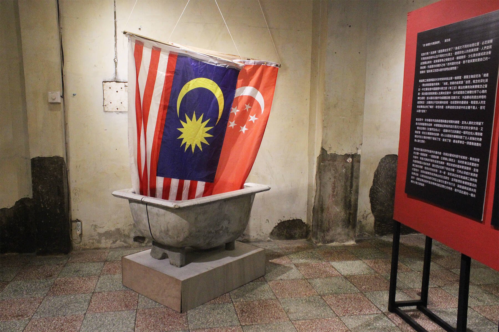

淮橘為枳
藝術家│丘偉揚 、張恩滿
策展人│邱柏廷
展覽時間│06/04 ～07/03
開幕時間│02:00 pm 06/04
地點│能盛興工廠 一樓展場+二樓和室空間
FB活動頁：https://www.facebook.com/events/1048000601956189/
策展理念
「啊 檸檬色兮異國暗暝」
─ 黃勁連
在旅行嗎？流浪嗎？還是異地生根了？身處於不同的地理位置，必定接觸不同的政經條件以及不同的文化風土，遭遇到他人的差異現實。人們並就此發展出新的，或保留原有之勞動生命、婚姻關係、文化風俗甚或政治衝突結構。何處是你的應許之地？而所謂的他者，會不會其實就是自己的一個面向？藝術家又怎麼以創作探問此類問題？
能盛興工廠國際藝術村非常榮幸推出第一檔展覽，展覽主軸設定為「境遇」，開出兩個觀看的視角︰「地氣」意義的追索跟「遊歷」概念的深化探討。中文展名借中國重要科學文獻《考工記》舉出的事例為策展概念之旨趣，探討藝術家與策展人在異地互動中，如何處理自己身體位移下心境的轉化過程，並以藝術活動作為具體回應/回饋方式；外語展名則提出終極的遊歷概念︰主體頭也不回的單向旅程，在經歷新的遭遇後，每個旅人的生命故事自此有了轉折。奇怪的是，如果這個在旅途中的主體不是人，那可以是什麼呢？
自古到今，許多藝術作品都處理與遷徙相關的議題，並為人類的文明留下各式各樣豐厚的成果︰本展覽論述契機來自於西元六世紀的文學作品，艾．香法拉寫的《文盲阿拉伯人》，這篇68行古詩講述一個阿拉伯人獨自離開部落，前往沙漠冒險的故事。詩人以細膩的筆觸刻劃了主人翁強壯的身軀如何在沙漠的考驗下瘦成了蛇、變成了獸、最後昇華至一頭優雅雄鹿的身心變化歷程。
兩位駐村藝術家們的創作計畫內容，則探討疆域的固守或解放。單向旅程的主體一個是國家，一個是敘事︰丘偉揚心繫故土，他的影像及裝置創作內容中，有各式象徵符號形成感性鋪排，標誌故鄉的國族緊張關係，並指向星馬兩國以海峽為界，雖在歷史因素下被迫分離，仍然必須處於資源密集交換的現實，相依共存的狀態；另一邊，張恩滿從她在能盛興工廠的駐村歷程中，拾取她觀察到或想像出的生活調性，並用動態影像展開靈活的敘事活動，以解消敘說者可辨認之確切位置作為方法，與能盛興成員共同創作，虛實並陳成員們各自精神活動空間化的特色，創作因此邁向一種共構的少數文學旨趣。
駐村成員介紹

│邱柏廷│(台灣)
邱柏廷，出生成長於台北，當代藝術與文化工作者。關心當代流離經驗以及特權空間。認為藝術對當前人類的主要貢獻，是作為過渡型客體存在。研究範圍為當代前衛藝術發展、政治與美學關係、精神分析導向之藝評、計畫型創作之文件性、藝術史料等等。

│丘偉揚│(馬來西亞)
創作橫跨繪畫、雕塑、裝置等，關注馬來西亞族群、殖民歷史，跟其他社會現象。


作品：我來自柔佛海峽
由於出生在歐亞大陸的最南端「柔佛新山」，鄰近新加坡，所以在我成長過程中家人都會經常帶我到新加坡拜訪親人。在馬來西亞，卻每天都觀看著新加坡的電視節目，隨著年紀的成長，身邊許多朋友都慢慢的踏入社會，也有許多親朋戚友都選擇到新加坡工作，賺取更多的錢，而這也成了一個潮流散播在全馬各地。這一切對大家來說已經成了一個「理所當然」的事，而就是這個理所當然，讓我開始去拋出一些問題，並開始從人類學會「走路」開始去看與觀察人類文明的發展過程。發現了「歐亞大陸」與「美洲大陸」之所以會在發展上出現了分歧，取決於地理、氣候、環境，讓人能方便的去移動，並進行各種交流。而歐亞大陸卻因中亞地區的廣闊，從而讓不同文明的國家透過人與人的「移動」從而進行「交流」才讓歐亞文明如此的豐富多元。
透過對大歷史的觀察，回到自身出生成長的地方，看看新馬之間的關係︰從地理，宗教，文化，語言，生活上我們都是如此的相似，就算在1965年過後，雙方走向不同的政治傾向與發展，兩國之間的政治對似乎想切斷彼此的關係，劃分領土、領海、領空，但是「地域基因」與「人類基因」把這兩者的存在卻活生生的鏈接起來。所以這次的作品中，我從新馬兩地彼此的面對彼此的海岸進行觀察，發現兩邊所面對彼此的態度，對比非常的強烈，一邊的海岸充滿熱鬧，沒有戒備，人們擁有踏入柔佛海峽的權利，一邊的海岸卻是冷清，充滿著戒備，人們基本沒有踏入柔佛海峽的權利。這也是我為何這次主要選擇一個我不熟悉的攝影與影像做為這次的呈現方式，是因為我想抓下在不同的時間，地點，國家組合起來，放在一起同時間去觀看，原本兩個國家之間的共同歷史脈絡與血緣關係，卻因政治分歧而分家，所產生的政治副產品，導致了人無法像過去幾百年前年那樣，能夠自由地在兩地來往。新國對馬國的不信任，讓新國在建國之初，城市規劃都集中在中心地與後方，沿著柔佛海峽的只有公園、工廠、森林保護區。身為一個第一世界的國家，似乎在告訴著馬國，「我是國際一流的城市之一，無需看到門口對面的你太多」。但由於地理的關係，卻不得不留下一座橋作為物資與人來往的地方。無論政治關係怎麼切割，人的情感與血緣關係都因那2km的距離，永遠都無法切斷。

│張恩滿│(台灣)
出生於台東，成長、生活與工作於台北。先是身分認同啟動了藝術家對臺灣島土的探尋旅程，藉由回訪原住民族部落的路徑去感受一個社會的地理紋理，企圖尋找出如食物鏈般的連結來描繪這個文化地景。在全球化下消弭的邊界裡，在文化作為一種意識形態支配機制之中，藝術家的身體在有形界線中游擊、移動，思考被群體所反射出來的現實，併同處理於創作之中。在從事自我心靈空間的製圖裡，來外推廓繪出社會或世界的概略整體，並希望從中發掘藝術可以如何去轉化的力量。
作品網站：http:// amaan286.blogspot.tw/


作品：馬賽克傳奇